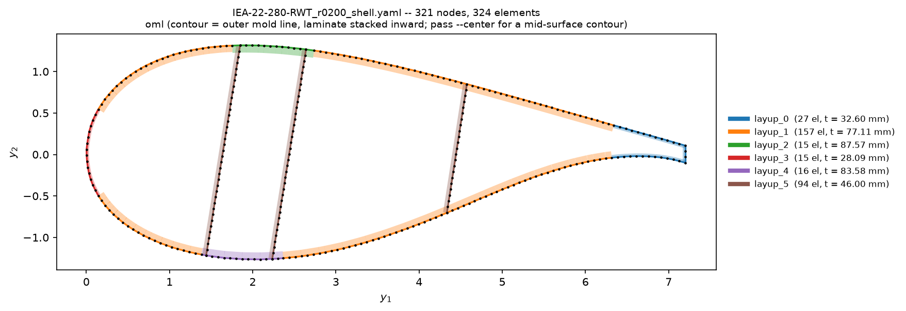
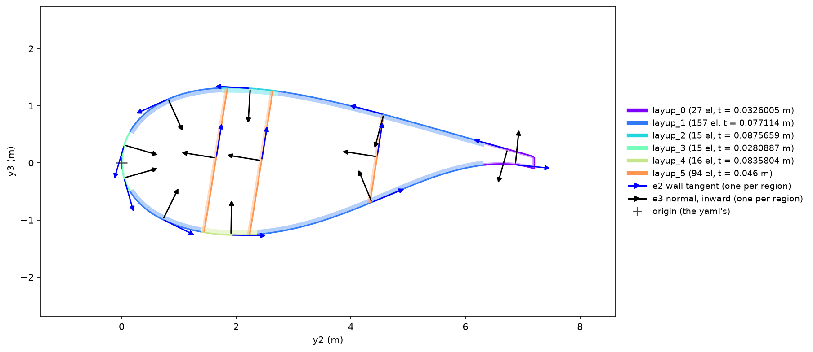
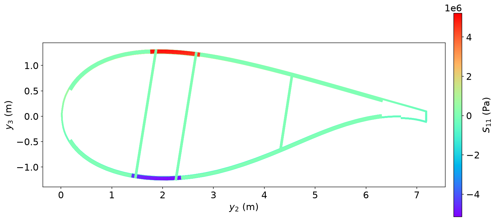
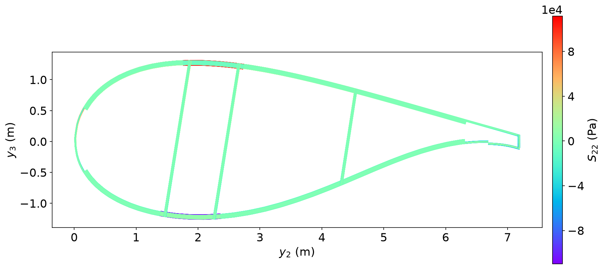
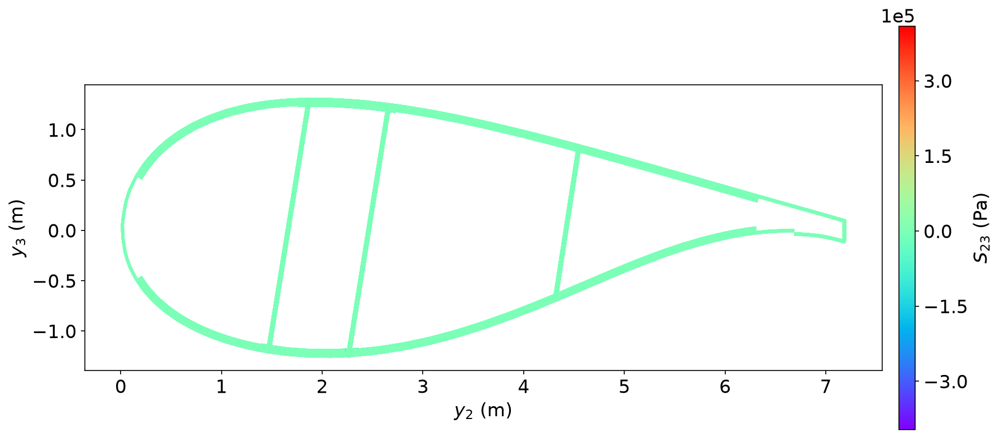

02 IEA-22 blade at r = 0.2#
Step 1: The shell section and its 6×6 stiffness#
Prompt
Units SI (m, Pa, kg/m³). Blade: https://raw.githubusercontent.com/IEAWindTask37/IEA-22-280-RWT/main/windIO/IEA-22-280-RWT.yaml
Step 1: build the OpenSG shell section (msg-shell ring) of station r = 0.2; the shell reference is the outer mold line.
Homogenize it and show the 6×6.
Publish every mesh PNG in this chat, rendered inline.
Do all of it now in one run, without stopping to ask.
CompositesAI
Done. Here is the one-run result from the OpenSG shell-section build and homogenization at station \(r=0.2\).
OpenSG shell section complete — station \(r=0.2\)
Reference surface: outer mold line (OML); laminates stack inward.
Section: chord \(7.19850\ \mathrm{m}\), 321 nodes, 324 shell elements, including three webs.
Mesh check: passed. Skin normals inward: 230/230; web-side normals: 94/94; no failed elements.
Mesh convergence: fine mesh (645 elements) differs by at most 0.952% on the reported diagonal stiffnesses.
Timoshenko 6×6 sectional stiffness
Order: \([\epsilon_{11},\gamma_{12},\gamma_{13},\kappa_1,\kappa_2,\kappa_3]\) / \([F_1,F_2,F_3,M_1,M_2,M_3]\).
Key terms:
\(EA = 2.84305\times10^{10}\ \mathrm{N}\)
\(GA_2 = 7.48702\times10^{8}\ \mathrm{N}\)
\(GA_3 = 3.96713\times10^{8}\ \mathrm{N}\)
\(K_{44}=3.98186\times10^{9}\ \mathrm{N\,m^2}\) (Timoshenko torsion)
\(1/S_{44}=2.37833\times10^{9}\ \mathrm{N\,m^2}\) (shear-condensed/VABS \(GJ\))
\(EI_2=3.55703\times10^{10}\ \mathrm{N\,m^2}\)
\(EI_3=2.51892\times10^{11}\ \mathrm{N\,m^2}\)
Mass per length: \(787.126\ \mathrm{kg/m}\)
Mesh PNGs
OpenSG shell mesh — r = 0.2


OpenSG shell mesh — r = 0.2#
Shell orientation and layup mesh — r = 0.2


Shell orientation and layup mesh — r = 0.2#
Deliverables
If you want, I can next extract the classical beam stiffnesses, compare shell vs condensed torsion, or repeat the same workflow for another blade station.
Step 2: Local stresses under M2 and their contour plots#
Prompt
Step 2 on this r = 0.2 ring (same OML reference): recover the local stresses under M2 = 1 MN·m alone (F1 = F2 = F3 = M1 = M3 = 0).
Show all six 3-D stress components (S11, S22, S33, S23, S13, S12) as rainbow contour plots.
Publish the PNG of each non-zero component in this chat, rendered inline.
Do all of it now in one run, without stopping to ask.
CompositesAI
Done. Here is the one-run stress recovery for the same \(r=0.2\) OML-referenced ring under \(M_2=1\ \text{MN·m}\) only.
Local stress recovery complete
Applied load: \(M_2=1.000\times10^6\ \mathrm{N\,m}\); all other resultants zero. The OML reference was retained. Stresses are in the local ply axes.
Component |
Minimum (Pa) |
Maximum (Pa) |
|---|---|---|
\(S_{11}\) |
\(-5.15309\times10^6\) |
\(5.21759\times10^6\) |
\(S_{22}\) |
\(-1.09845\times10^5\) |
\(1.11726\times10^5\) |
\(S_{33}\) |
\(-1.71\times10^{-7}\) |
\(1.77\times10^{-7}\) |
\(S_{23}\) |
\(-3.96651\times10^5\) |
\(4.09347\times10^5\) |
\(S_{13}\) |
\(-6.73\times10^{-5}\) |
\(6.25\times10^{-4}\) |
\(S_{12}\) |
\(-4.69\times10^{-8}\) |
\(6.79\times10^{-8}\) |
The non-zero contours \(S_{11}\), \(S_{22}\), and \(S_{23}\) are rendered inline. \(S_{33}\), \(S_{13}\), and \(S_{12}\) are numerical-zero fields for this pure bending load, so no PNGs were published.
Resultant verification passed: recovered \(M_2=1.000235\times10^6\ \mathrm{N\,m}\), a 0.0235% difference.
Rainbow contour plots
S11 stress contour — M2 = 1 MN·m


S11 stress contour — M2 = 1 MN·m#
S22 stress contour — M2 = 1 MN·m


S22 stress contour — M2 = 1 MN·m#
S23 stress contour — M2 = 1 MN·m


S23 stress contour — M2 = 1 MN·m#
Deliverable
If you want, I can next recover stresses for \(M_3\), torsion \(M_1\), or a combined load case on the same ring.